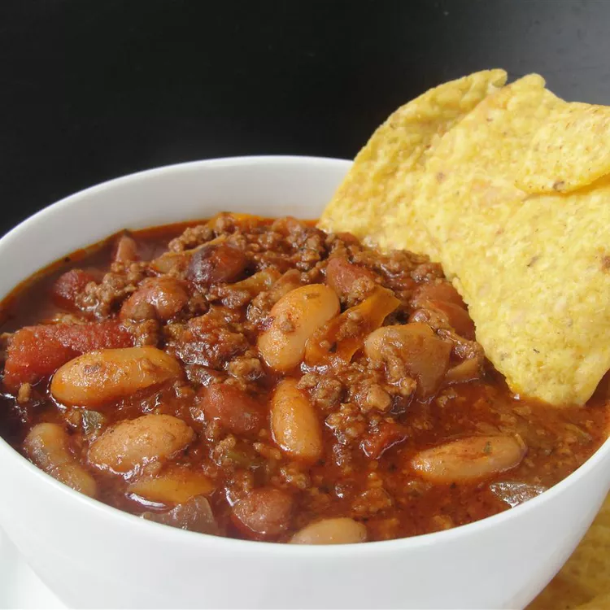

The Ultimate Slow Cooked Chili

Description
Chili is always a little bit of experimentation, a whole lot of flavor, and one of my absolute favorite dishes. There is always a little give and take but here is my honed recipe with the (staple) list of ingredients. Serve in a bowl on a cold night or even spread over white or brown rice sometimes. Always sprinkle generously with Cheddar cheese and crumbled tortilla chips and maybe a dollop of sour cream and enjoy!
Ingredients
- 2 tablespoons olive oil, divided
- 2 pounds lean ground beef
- 1 onion, chopped
- 2 tablespoons chopped garlic
- salt and ground black pepper to taste
- 2 (15 ounce) cans pinto beans
- 2 (15 ounce) cans ranch-style beans
- 2 (15 ounce) cans white kidney beans (cannellini)
- 1 (15 ounce) can tomato sauce
- 1 (14.5 ounce) can Mexican-style stewed tomatoes
- 1 (7.75 ounce) can Mexican-style hot tomato sauce (such as El Pato®)
- 1 green bell pepper, chopped
- 2 stalks celery, chopped
- 3 tablespoons chili powder
- 2 tablespoons Worcestershire sauce
- 2 tablespoons balsamic vinegar
- 1 tablespoon garlic powder
- 1 tablespoon ground cumin
- 1 tablespoon dried parsley
- 1 tablespoon dried basil
- 1 tablespoon brown sugar
- ½ cup red wine (Optional)
Steps
- Heat 1 tablespoon olive oil large skillet over medium-high heat; cook and stir beef, onion, and garlic in the hot oil until browned and crumbly, about 10 minutes; drain and discard grease. Season beef mixture with salt and pepper.
- Mix ground beef mixture, remaining 1 tablespoon olive oil, pinto beans, ranch-style beans, white kidney beans, tomato sauce, Mexican-style stewed tomatoes, Mexican-style hot tomato sauce, green bell pepper, celery, chili powder, Worcestershire sauce, balsamic vinegar, garlic powder, cumin, parsley, basil, and brown sugar together in a slow cooker.
- Cook on High for 4 hours; stir in red wine and continue cooking for 2 more hours. (Cook on Low for 8 hours.)